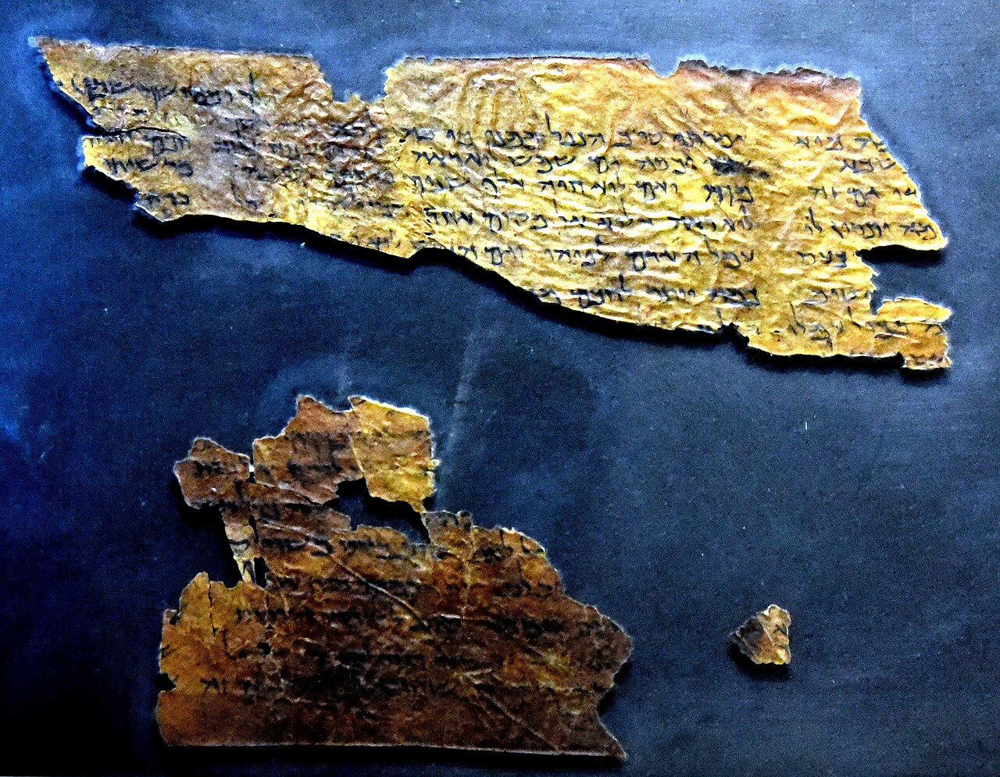
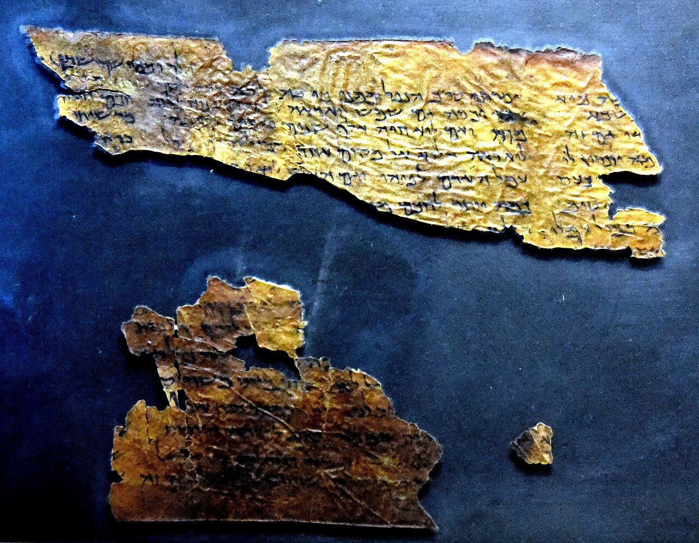

The Dead Sea Scrolls: The Exhibition
O incursiune în istoria și cultura comunității Qumran prin textele care au schimbat lumea.
Despre expoziție
Expoziția prezintă manuscrise originale și artefacte din perioada Templului al Doilea, oferind vizitatorilor șansa de a descoperi unele dintre cele mai vechi texte biblice care au supraviețuit până astăzi. Manuscrisele de la Marea Moartă, descoperite în Qumran între 1946 și 1956, sunt considerate una dintre cele mai mari descoperiri arheologice ale secolului XX.
În cadrul expoziției vei găsi fragmente din cărțile Geneza, Psalmii, Numeri, precum și altele (ex: Psalmii non-canonici, Isaia, Tabit, etc.)
Galerie
 

Informații de bază
- Locație: The Museum of the Bible, Washington D.C.
- Perioadă: 22 Noiembrie 2025 — Septembrie 2026
- Număr artefacte: peste 200 de obiecte expuse
- Parteneri oficiali: Israel Antiquities Authority
Ce vei descoperi în expoziție
Fragmente autentice
Păstrate în condiții speciale — fragmente rare din cărți biblice și texte ale comunității Qumran.
Artefacte istorice
Obiecte din viața de zi cu zi a comunității: vase, lămpi, instrumente și textile.
Experiență digitală
Display-uri interactive care explică modul în care manuscrisele au fost traduse și conservate.
Doriți să aflați mai multe?
Pentru informații detaliate despre exponate, parteneri și istoria manuscriselor, vă invităm să vizitați pagina oficială.
Află mai multe detalii